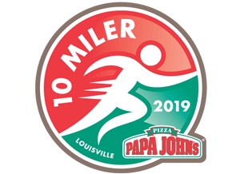

Papa John's 10 Miler Packet Pickup and Race Registration
Papa John's 10 Miler Packet Pickup
Friday, March 22, 2019
Time: 11:00 am – 7:00 pm
Brown & Williamson Club, Gate 6
Cardinal Stadium
2800 South Floyd Street
Louisville, KY 40209
Race Day Registration on March 23, 2019
Saturday, March 23, 2019
Time: 6:00 AM - 7:30 AM
The location for Race Day Registration & Packet Pick-Up will be located at the tunnel between Bronze Lot and Green Lot at Cardinal Stadium.